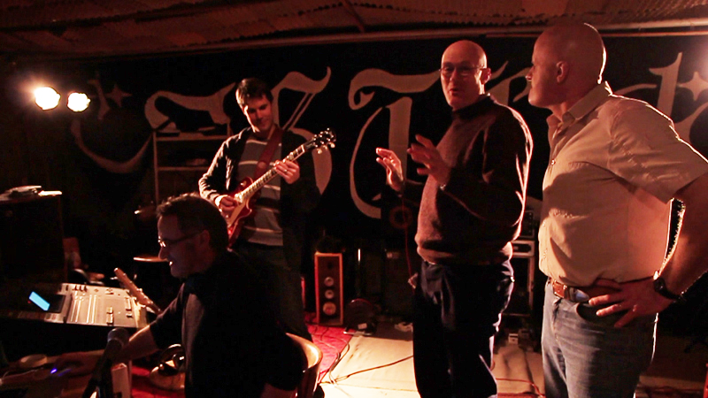
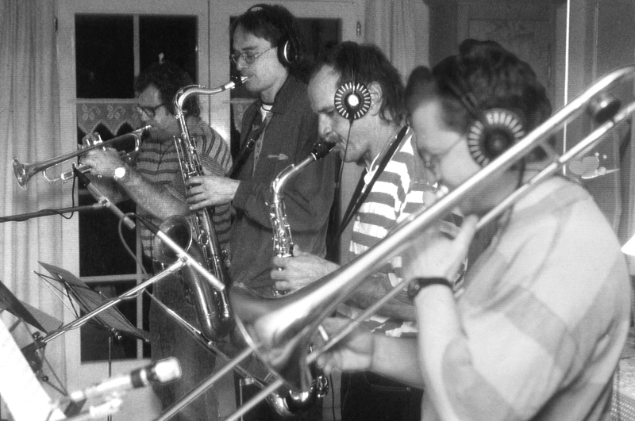
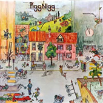
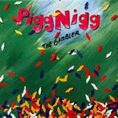
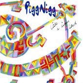
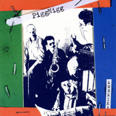
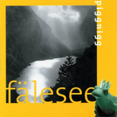
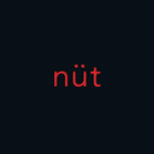
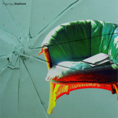

Wie wenn i grad gebore wär
SRF «Karussell» (1982)

Piggnigg wurde 1981 von Daniel Weniger (Bass, Gesang), Wolfgang Egli (Tasten, Gitarre, Gesang) und Alexander Egli (Schlagzeug) gegründet zwecks Pflege des St.Gallischen Liedgutes.
Piggnigg veröffentlichte zwei LP's und sechs CD-Alben. Seit 2007 treten Daniel Weniger und Wolfgang Egli mit ihrem Musikkabarett «Weniger Egli» auf den Kleinkunstbühnen der Schweiz auf.

Fotos von Piggnigg aus den verschiedenen Jahren.
SRF «Karussell» (1982)
SRF «Hear we go» (1985)
2005
FCSG-Hymne (2010)

Der Grundstein unseres Mundartprojektes. Versuch, Gefühle im Sanktgaller-Dialekt auszudrücken und zu erzeugen. Sehr vielfältig und verspielt.

Das grüne aber geliebte Schaf unter unseren Tonträgern. Musikalisch das aufwändigste und vielleicht auch beste Werk.

Eine Wiedereinsteiger-CD nach Familiengründungen und Hausumbau. Songs, die sich während Jahren angestaut hatten.

Rockmusik, gespielt in der Besetzung eines Jazz-Quartetts. Schlank, akustisch, aber mit viel Kraft.

Hier wieder das volle Brett. Bläsersätze mit Gitarrenrotz, Piano, Orgel und die ganze Schose.

13 Songs, mit viel Ausstrahlung. Rock, Herz, Witz, Blues, Ironie und Melancholie.

Piggnigg: eigen-artig. knorrig. Ein Olivenbaum in der Ostschweiz. Sound: knusprig. lehmig. glockig.

Wir sind Kaiser. Ihr auch. Ein Volk von Kaisern. Und oben drauf ein paar Armleuchter.
11.11.2010
«Mer lönd eu do nöd im Rege stoh» – die gedichtete Motivationsspritze als Hymne zum Mitsingen.
01.09.2008
Zog das Publikum an: Die Band Piggnigg bot Mundartrock für Fortgeschrittene.
20.04.2006
Eine intellektuelle Band mit viel Bodenhaftung spielt intelligente Rockmusik mit Charme und Witz.
15.11.2003
Singen gegen den Mainstream: Die Ostschweizer Mundart-Rockgruppe Piggnigg.
Piggnigg, Zielweg 10, 9230 Flawil
071 393 42 41